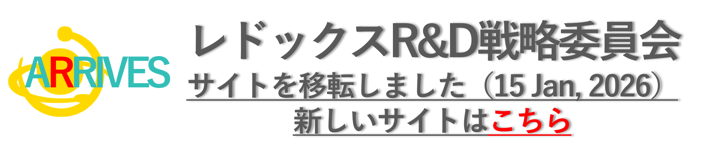

レドックスの世界へEnter the world of Redox
全ての生命体はレドックス反応（酸化還元反応）によりエネルギーを産生しています
これは生命の起源にレドックス反応があったことを示しています
レドックスのホメオスタシスは体温やpHと同様に重要であり、酸化ストレスにも還元ストレスともなり細胞機能の異常を来たします
産官学の研究者が領域横断的に交流するなかで日本独自のレドックスサイエンスの萌芽とその世界貢献が可能になるものと思います
最新情報What's New
ウェブサイトを移転しました
新しいウェブサイトのURL
https://sites.google.com/view/redoxrd-toppage/%E3%83%9B%E3%83%BC%E3%83%A0?authuser=1